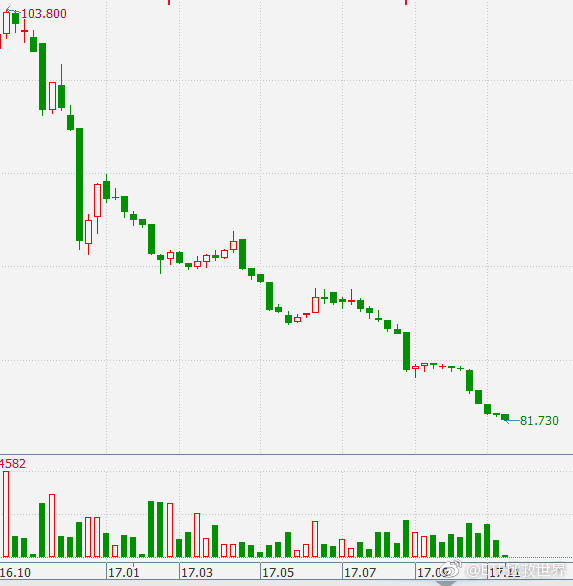
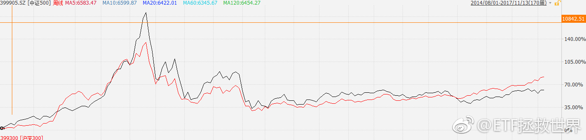
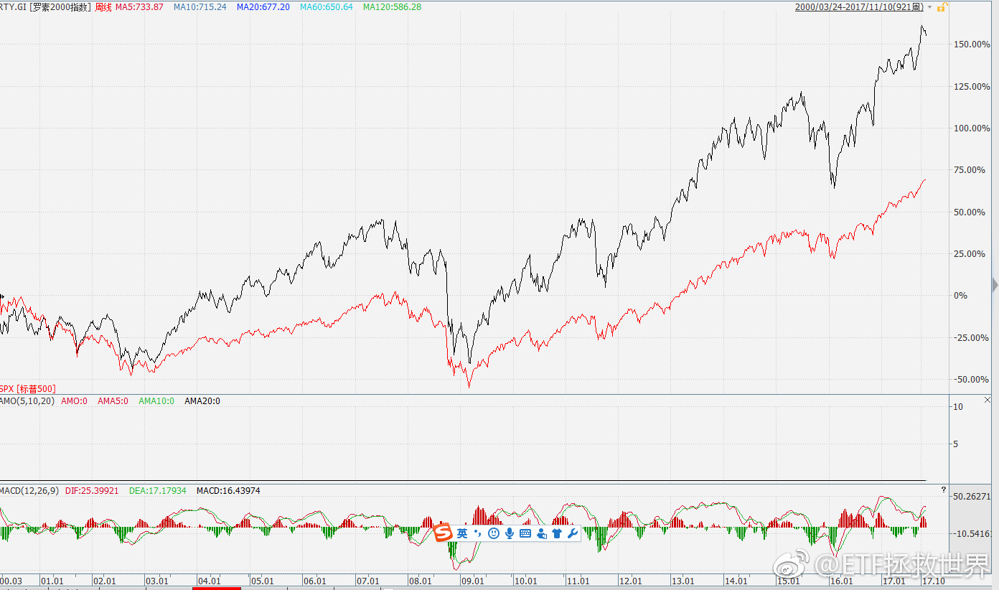

回复@樱红一点2011:现在可以说已经到4了//@樱红一点2011:E大10月16日说的，这么快。 未来债券配置路线图： 4-4.5会配置到大概10%-15%。 4.5-5会配置到15-20。 如果可以到5以上，会配置到30%——而且是30%杠杆债基。 07年底我重仓配置债券的时候，十年期国债收益率也只是4.8而已。 @ETF拯救世界:$中证环保 sh000827$ 悠着点好吗。
回复@李贤1985_319:是的。多长时间会回到100很重要。如果30年回去，也就4.x收益率。一年回去，就一年赚这么多。不懂别瞎买个券，切切。//@李贤1985_319:16国债19，票息3.27，30年,现价81.73，相当于票息4.0了。//@ETF拯救世界:回复@elktwo:（100-60）/60=老铁双击66.66%。不加杠杆的情况下。@ETF拯救世界:国债个券，一年时间，惨不忍睹。不知道有没有机会见6字头。如果有，几年够吃了。 
其实一直以来沪深300走势都没有中证500好，这一轮的转折点出现在今年5月。也就是说，300走得比500好，也就半年而已。然而所有人都认为“价值投资进入了一个新阶段”。P新阶段，风格轮换而已。以前不断的发生，未来还会发生。无论是中国美国都是如此。第二张图是罗素2000与标普500的对比。美国也是中盘股涨幅大多数时间会大于大盘股。当然，也有风格轮换的问题。
回复@elktwo:（100-60）/60=老铁双击66.66%。不加杠杆的情况下。//@elktwo:贫穷限制了我的想象力，谁能告诉我大概有多少收益@ETF拯救世界:国债个券，一年时间，惨不忍睹。不知道有没有机会见6字头。如果有，几年够吃了。
未必。这个图是标普500和罗素2000（相当于中证500）的走势对比。可以看出2000比标普500强很多。最近A股这种只有100多家大涨特涨是极不正常的。 评论配图@ETF拯救世界:你别看2000家下跌，创业板和中小板指涨得可不错。
提醒一下，这条带狗头了啊！//@ETF拯救世界:回复@吉利可爱:送个明牌给你，01918，据说要涨到8848。一个谣言，不一定对。//@吉利可爱:有无可能出现翻倍呢？现在涨个百分之几十不过瘾@ETF拯救世界:刚才看了看，计划部分A+港股的仓位已经有接近40%。如果各位自己也买一些其他的，仓位已经不算低了。仓位呢，舒服最重要。也不要太着急下车，有人送钱你就多呆一会。不急。